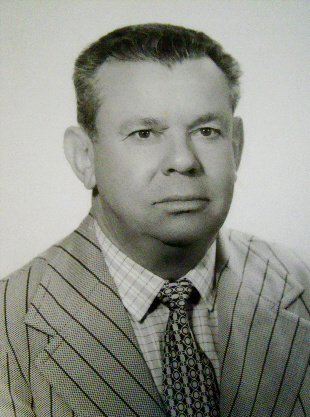

Professor Odelar Leite Linhares

Odelar Leite Linhares bacharelou-se, em 1956, em Matemática pela extinta Universidade do Brasil. Foi pioneiro no desenvolvimento da Ciência da Computação no Estado de São Paulo. Há um prêmio com seu nome reservado para os melhores trabalhos de mestrado e doutorado aplicado pela Sociedade Brasileira de Matemática Aplicada e Computacional - SBMAC da qual foi presidente entre 1979 e 1981 e colaborador de sua fundação. Foi docente da USP, Unesp, Unicamp e UFSCAR. É autor ou autor orientador de pelo menos 61 publicações. Faleceu dia 31 de maio de 2004.
Prêmio SBMAC de Pós-Graduação (Categorias de Mestrado e Doutorado): Prêmio Odelar Leite Linhares
A concessão do prêmio de pós-graduação da SBMAC foi iniciada no XXV CNMAC, realizado em 2002. Este prêmio, nas categorias de doutorado e mestrado, passou então a ser concedido anualmente à melhor tese de doutorado e à melhor dissertação de mestrado submetidas à Comissão Julgadora. Os prêmios a serem concedidos em 2006, 2007 e 2008 homenagearão o Prof. Odelar Leite Linhares (1926 - 2004 ), que foi um dos fundadores e o primeiro Presidente da Sociedade. Fonte: SBMAC
Prêmio Recebidos
Recebeu prêmio da UNESP Doutor honoris causa in memoriam. Na cerimônia Aleardo Manacero Junior, do Instituto de Biociências, Letras e Ciências Exatas, em São José do Rio Preto, destacou a atuação de Odelar Leite Linhares, falecido em 2004, na criação do curso de Ciências da Computação das três universidades públicas paulistas - UNESP, USP e Unicamp - e da Universidade Federal de São Carlos (UFSCar). "Ele influenciou toda uma geração", afirmou. "Acredito que meu pai gostaria de ser lembrado pelo seu pioneirismo, honestidade e despojamento", comentou Arício Xavier Linhares, filho do homenageado. Fonte: Notícias - UNESP
Depoimento
Odelar Leite Linhares, o nosso querido Prof. Odelar, foi um verdadeiro bandeirante da computação no Brasil. Por onde passou deixou sementes que fecundaram e produzem bons frutos. Sempre foi muito humilde, desprovido de qualquer atitude de orgulho ou vaidade, ao contrário, sempre trabalhou pensando naqueles que o rodeavam e na sociedade como um todo.

Em todas as suas atitudes podíamos identificar um carinho especial em retornar para a sociedade os dividendos daquilo que ela depositava na Universidade pública. Foi assim que iniciou sua carreira no ITA, veio para a EESC-USP em São Carlos, participou da fundação do então ICMSC, hoje ICMC, e do Departamento de Ciências de Computação e Estatística (SCE), foi chefe do SCE em várias gestões e foi Diretor do ICMSC.
Por um período trabalhou na Unicamp, plantando mais uma semente da qual nasceu um dos mais reno mados cursos de Bacharelado em Ciências de Computação do Brasil. Aposentando-se na USP não parou, foi para o Departamento de Ciências de Computação e Estatística do IBILCE, campus da UNESP de São José do Rio Preto, ajudando a consolidar o curso de graduação de Bacharelado em Ciências de Computação e implantando o mestrado em Matemática Computacional.
De volta a São Carlos ainda não parou, foi colaborar na Cooperati va Educacional de São Carlos (Educativa), sendo presidente do Conselho Administrativo por vários anos, afastando-se apenas quando a saúde não mais permitiu que continuasse a ser o líder do dia a dia da Educativa. É impossível listar todos os em preendimentos que brotaram da inteligência do Prof. Odelar e cujos frutos permeiam o nosso ambiente.
Dentre alguns de seus feitos no ICMC, temos o consagrado curso de Bacharelado em Ciências de Computação do SCE, ao qual tanto se dedicou e lutou, buscando consolidar um corpo docente qualificado e implementar uma infraestrutura digna dos melhores cursos da USP e do Brasil. O atual Museu de Computação do ICMC é uma extensão do Museu de Cálculo Numérico, também idealizado e criado pelo Prof. Odelar, que sempre se preocupou em registrar e manter a história da computação no Brasil.
O Prof. Odelar sempre foi um sonhador, um sonhador que tratava o presente com o pensamento no futuro, idealizando para as próximas gera ções. Foi assim que investiu em jovens promissores nas décadas de 70 e 80, mesmo com o pesado ônus de enviá-los para completar sua formação em grandes centros, principalmente do exterior.
O resultado é visível hoje no que temos em termos de Computação e Matemática Computacional no ICMC. No início da década de 80 já vislumbrava a criação de um curso de Engenharia de Computação, que foi concretizado recentemente, em parceria com a EESC, em 2002. Foi responsável direto pela criação da pós-graduação em Matemática Computacional e Ciências da Computação do ICMC, que nasceu a partir do Curso Interunidades envolvendo a EESC e o ICMSC do campus de São Carlos e a FMRP do campus de Ribeirão Preto.
Enfim, o Prof. Odelar teve muitos sonhos e idealizou muitos empreendimentos, tendo realizado com sucesso um número enorme deles. Mas, alguns de seus sonhos não foram ainda realizados e ficaram como desafios para que trabalhemos no sentido de concretizá-los. Ao grande amigo Prof. Odelar, a nossa mais profunda e sincera homenagem.
Fonte: ICMCotidi@no nº56 (Autor Prof. Dr. Marcos José Santana, ICMC/USP)